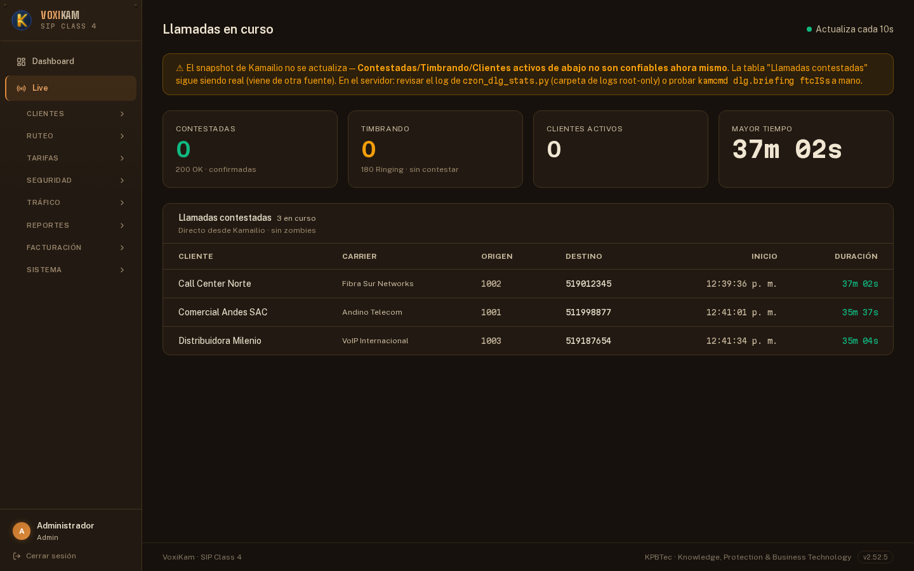

Billing por minuto, trazas SIP capturadas vía HEP y firewall gestionado desde el panel — sin abrir consola, sin perder de vista quién cortó cada llamada. Per-minute billing, SIP traces captured via HEP, and a firewall managed right from the panel — no console, never losing track of who dropped which call.

Sin consola, sin scripts sueltos. Un solo panel para billing, monitoreo, firewall y portal para tus clientes. No console, no loose scripts. One panel for billing, monitoring, firewall and a portal for your clients.
SBC de producción: LCR, failover automático, ACL por IP y captura de trazas HEP. VoxiKam no intercepta llamadas activas — actúa solo al finalizar para calcular costos. Production SBC: LCR, automatic failover, per-IP ACLs and HEP trace capture. VoxiKam never intercepts active calls — it only acts once a call ends, to calculate costs.
Longest-prefix match por prefijo E.164. Costo de compra (carrier) vs costo de venta (cliente) calculados por CDR. Balance prepago descontado automáticamente. Margen visible en cada registro. Longest-prefix match on E.164 prefixes. Buy cost (carrier) vs. sell cost (customer) calculated per CDR. Prepaid balance deducted automatically. Margin visible on every record.
Reglas ALLOW / DENY / JAIL por IP o CIDR gestionadas desde la interfaz. Sin SSH, sin editar archivos. Los cambios aplican en segundos — nftables regenerado automáticamente. ALLOW / DENY / JAIL rules by IP or CIDR, managed straight from the UI. No SSH, no editing files. Changes apply in seconds — nftables is regenerated automatically.
Cada cliente ve solo lo que el operador habilita: llamadas, calidad ASR, reportes, facturas y trunk guide. Perfiles de módulos reutilizables asignables a múltiples clientes. Each customer sees only what the operator enables: calls, ASR quality, reports, invoices and trunk guide. Reusable module profiles assignable to multiple customers.
Mini-Homer embebido. Kamailio envía mensajes SIP vía HEP al backend. Ladder diagram visual desde el panel: INVITE, 180, 200 OK, BYE — diagnostica en segundos sin consola, con exportación a .pcap para Wireshark.
Mini-Homer built in. Kamailio sends SIP messages to the backend via HEP. Visual ladder diagram right in the panel: INVITE, 180, 200 OK, BYE — diagnose in seconds without a console, with .pcap export for Wireshark.
Debian 12+, ~10 minutos, sin dependencias previas. Detecta IPs, configura Kamailio, RTPEngine, MariaDB, Nginx y todos los servicios. Actualización sin cortar llamadas activas. Debian 12+, ~10 minutes, no prior dependencies. Detects IPs, configures Kamailio, RTPEngine, MariaDB, Nginx and every service. Updates without dropping active calls.
Control total del sistema desde una sola interfaz. Solo accesible para administradores — validado en cada endpoint del backend. Full control of the system from one interface. Admin-only — validated on every backend endpoint.
.pcap sin abrir consola.Ladder diagram of SIP messages captured via HEP from Kamailio. Diagnose calls or export to .pcap without opening a console.Cada cliente accede a su propio portal con visibilidad exclusiva sobre su tráfico. Sin acceso a datos de otros clientes ni a funciones de administración. Each customer gets their own portal with visibility limited to their own traffic. No access to other customers' data or admin functions.
Cinco capas activas por defecto desde el día uno — sin configuración adicional. Cada una asume que la anterior puede fallar. Five layers active by default from day one — no extra configuration. Each one assumes the previous one can fail.
Bloqueo por IP/CIDR antes de que el paquete llegue a ningún servicio. Reglas gestionadas desde el panel web — sin tocar consola. ALLOW / DENY / JAIL por servicio: SIP, RTP, SSH. IP/CIDR blocking before the packet reaches any service. Rules managed from the web panel — no console needed. ALLOW / DENY / JAIL per service: SIP, RTP, SSH.
Rate limiting por endpoint. Bloqueo automático de user-agents maliciosos: sqlmap, nikto, masscan, nmap. Headers de seguridad HTTP activos por defecto. Per-endpoint rate limiting. Automatic blocking of malicious user-agents: sqlmap, nikto, masscan, nmap. HTTP security headers on by default.
10 req/60s en login, 300 req/60s en API. Headers: X-Frame-Options DENY, CSP estricto, Referrer-Policy. Cada endpoint protegido por dependencia de rol — no por convención de URL. 10 req/60s on login, 300 req/60s on the API. Headers: X-Frame-Options DENY, strict CSP, Referrer-Policy. Every endpoint protected by a role dependency — not by URL convention.
Tokens con expiración de 8 horas. Passwords hasheados con bcrypt (cost 12). Sin sesiones en servidor — sin riesgo de session fixation. Tokens expire after 8 hours. Passwords hashed with bcrypt (cost 12). No server-side sessions — no session-fixation risk.
Bind exclusivo en 127.0.0.1. Puerto no estándar (33100–33999). Usuario dedicado con permisos mínimos. Sin acceso remoto posible. Bound exclusively to 127.0.0.1. Non-standard port (33100–33999). Dedicated user with minimal permissions. No remote access possible.
Cada INVITE verificado contra la lista blanca del cliente. IPs no autorizadas descartadas silenciosamente — sin revelar que el servidor existe. Every INVITE checked against the customer's whitelist. Unauthorized IPs get silently dropped — without revealing the server even exists.
Un cliente solo puede ver sus propios CDRs. La restricción está en la capa de base de datos, no en el frontend — un bug de UI no puede filtrar datos. A customer can only ever see their own CDRs. The restriction lives at the database layer, not the frontend — a UI bug can't leak data.
Admin y cliente son roles incompatibles. Acceder a /api/admin/* sin rol admin devuelve 403 — independientemente de lo que muestre el frontend.
Admin and customer are mutually exclusive roles. Hitting /api/admin/* without the admin role returns 403 — regardless of what the frontend shows.
Historial completo en CHANGELOG.md · versión activa definida en release.conf Full history in CHANGELOG.md · active version defined in release.conf · entries below are kept in Spanish only
Resultado de una auditoría independiente de experiencia de usuario y diseño visual, tanto del panel de administrador como del portal de cliente/reseller.
Historial línea por línea de cada patch en CHANGELOG.md.
Debian 12+. Configura Kamailio, RTPEngine, MariaDB, Nginx, servicios systemd y crontabs automáticamente. Debian 12+. Automatically configures Kamailio, RTPEngine, MariaDB, Nginx, systemd services and crontabs.
| ComandoCommand | DescripciónDescription |
|---|---|
./deploy.sh | Detecta el estado del sistema y ofrece el modo correcto — primera instalación o actualizaciónDetects the system's state and offers the right mode — first install or update |
./deploy.sh → Actualizar | Código + DB + frontend. Kamailio no se toca — sin corte de llamadasCode + DB + frontend. Kamailio isn't touched — no call interruption |
./deploy.sh → Upgrade | Como Actualizar, pero también reinicia KamailioSame as Actualizar, but also restarts Kamailio |
./deploy.sh → Reinstalar | Reinstalación completa desde cero — borra la base de datosFull reinstall from scratch — wipes the database |